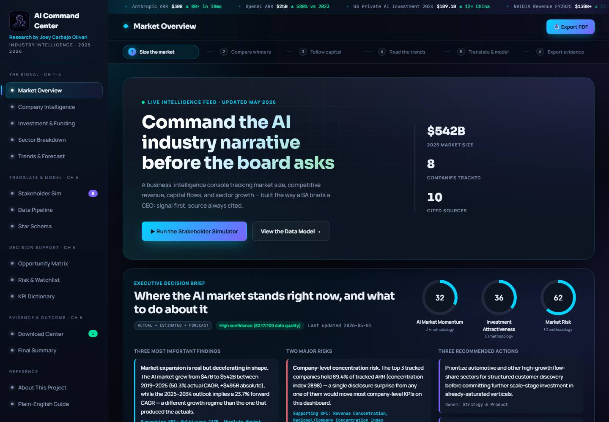
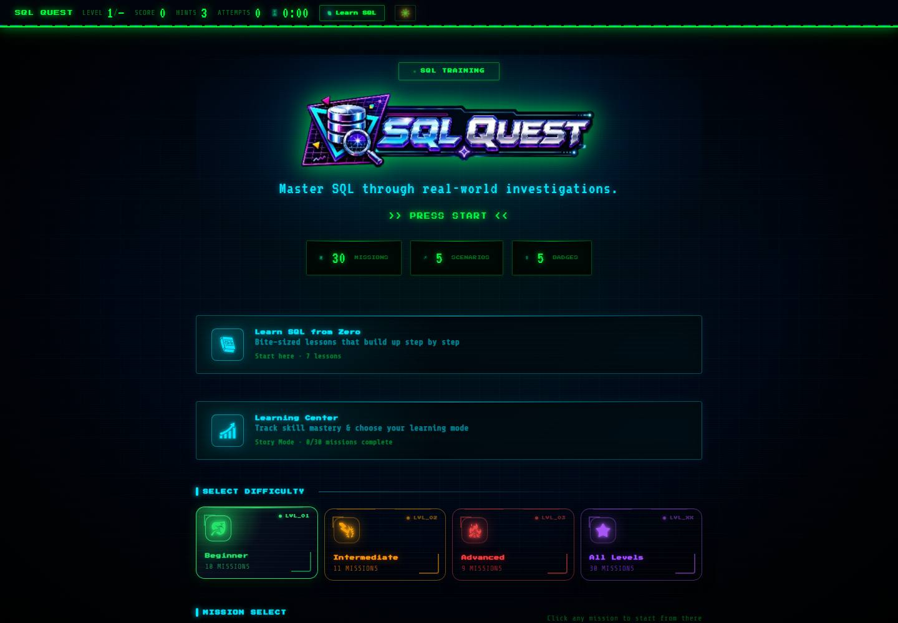

JOEY CARBAJO OLIVARI / BUSINESS & DATA PORTFOLIO
Business questions.
Useful answers.
I turn business questions into dashboards, documented metrics, and interactive tools. Explore my work in AI market intelligence, SQL learning, and financial analysis.
Business analysisRequirements → meaningful KPIs
Data storytellingMetrics → context → decisions
Practical developmentIdeas → working browser tools
01 / SELECTED WORK
See the work.
Explore the reasoning.
Two featured projects, with working demos,
documented decisions, and source code.
● ● ● AI INDUSTRY COMMAND CENTER / 01

AI INDUSTRY
COMMAND CENTER
Executive reporting · KPI design · Data governance
FROM MARKET DATA TO EXECUTIVE QUESTIONS
BUSINESS INTELLIGENCE / FEATURED
AI Industry
Command Center
What should a stakeholder investigate next? This dashboard connects AI-industry metrics with business implications, risks, and recommended follow-up.
- Stakeholder requirements and KPI definitions
- Documented data modeling and governance
- Scenario forecasts and decision briefs
Portfolio demonstration; includes estimated, forecast, and illustrative data.● ● ●SQL QUEST / LIVE PRODUCT / 02

LEARN SQL THROUGH FINANCIAL INVESTIGATIONS
SQL & INTERACTIVE LEARNING
SQL Quest
A browser-based learning game that teaches SQL through financial-compliance investigations, from KYC reviews to transaction monitoring.
- Mission-based learning with synthetic data
- In-browser SQLite powered by WebAssembly
- Practice sandbox and offline-capable PWA
Independent learning project. All client and transaction data is synthetic.ON THE WORKBENCH
Volatility Strategy Lab
Financial research and a Power BI dashboard shell. Data pipelines and report connections remain in progress.
02 / SKILLS WITH EVIDENCE
What I bring to a problem.
I’m interested in the space between a business question and a useful answer.
My projects explore that space through dashboards, financial scenarios, and interactive learning. I focus on making the reasoning visible: what a metric means, where its data comes from, and how someone might use it.
I like building things people can explore for themselves. The work here brings together analytical thinking, clear explanations, and hands-on development.
Requirements & KPIsData storytellingSQLHTML / CSS / JavaScriptData governanceFinancial scenarios
04 / HOW I APPROACH A PROBLEM
01Frame the question.
Start with the stakeholder, the decision, and what a useful answer would look like.
02Make the logic visible.
Define metrics, trace sources, and explain assumptions before drawing conclusions.
03Build something useful.
Turn the analysis into an experience someone can understand and explore.